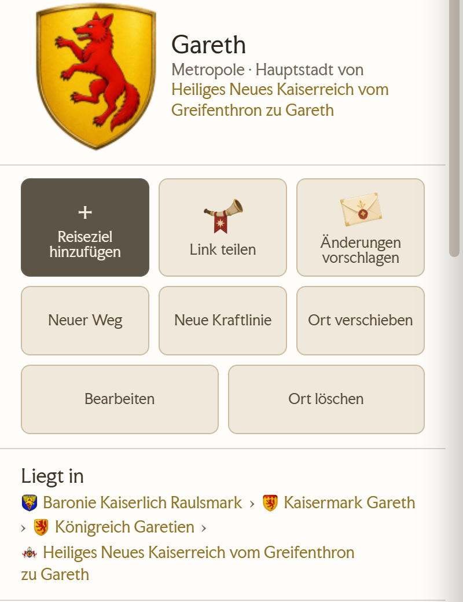
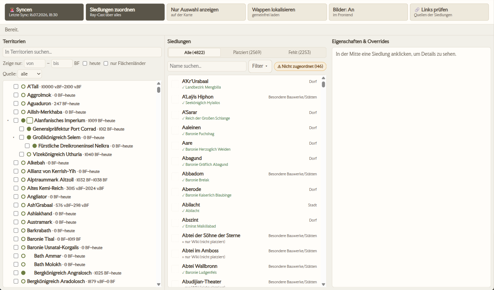
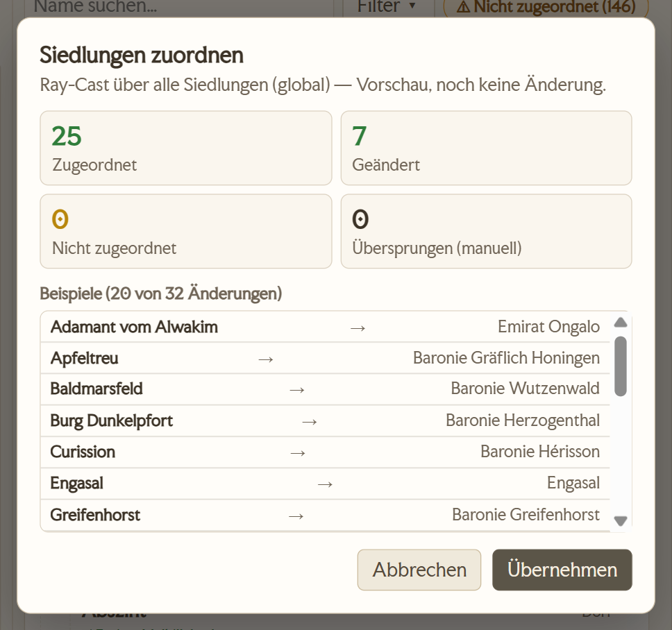
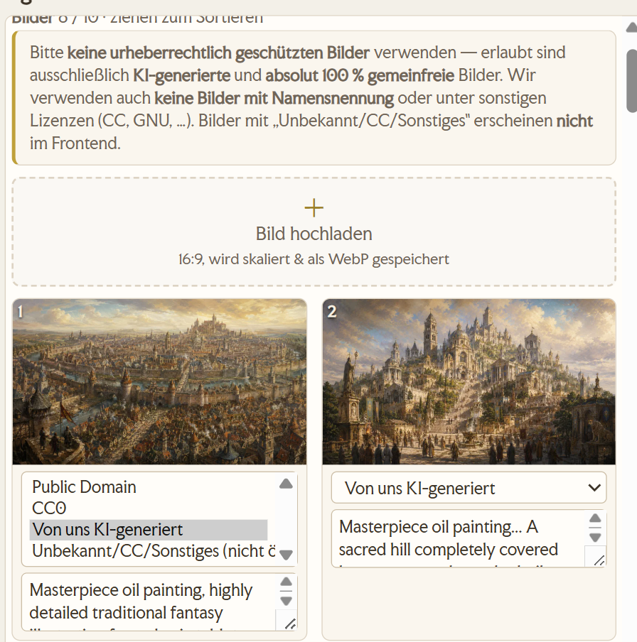
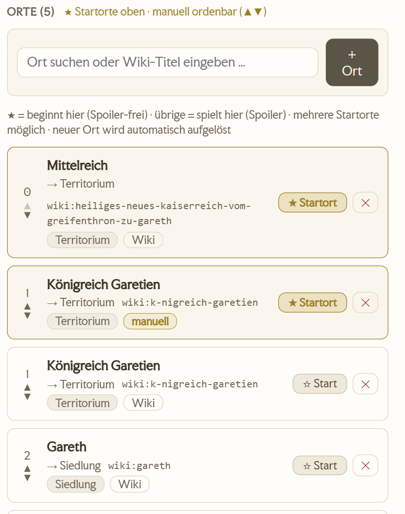
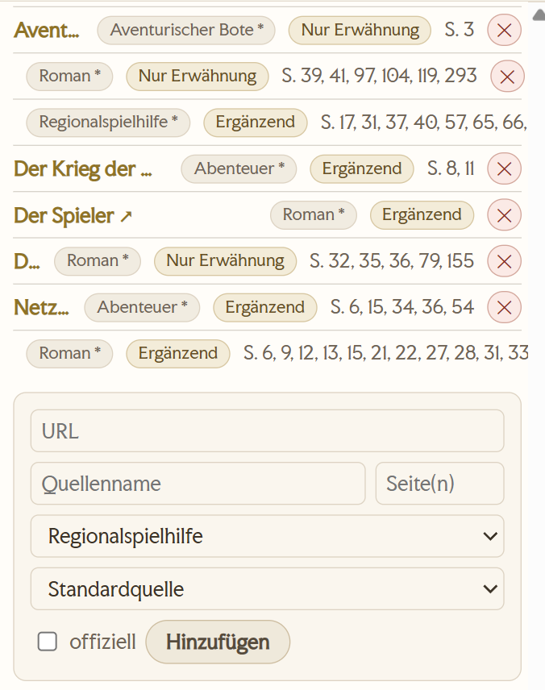
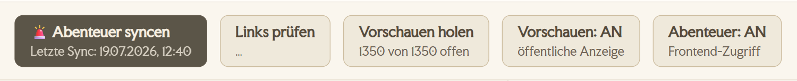

Editor-Handbuch
Willkommen im Editor-Team von Avesmaps. Diese Seite erklärt Schritt für Schritt, wie und wo du was machst. Sie ist zum Nachschlagen gedacht — du musst sie nicht am Stück lesen.
Erste Schritte
Als Editor pflegst du die Karte von Aventurien: Orte, Wege, Flüsse, Regionen, politische Grenzen — und ihre Verknüpfung mit dem Wiki Aventurica. Alles, was du speicherst, geht sofort live.
Zugang & Anmelden
Dein Konto richtet der Betreiber persönlich für dich ein — eine Selbst-Registrierung gibt es nicht. Benutzername und Passwort bekommst du direkt von ihm.
- Öffne avesmaps.de/edit/ ↗ im Browser.
- Gib Benutzername und Passwort ein und klick auf „Anmelden".
- Danach siehst du oben deinen Namen und deine Rolle sowie „Abmelden"; darunter läuft die Karte im Bearbeiten-Modus.
Die drei Flächen
Im Bearbeiten-Modus arbeitest du auf drei Flächen. Wenn du weißt, welche wofür zuständig ist, findest du alles Weitere von selbst.
- Die Karte. Hier klickst und ziehst du. Linksklick auf ein Objekt öffnet seine Infobox, Rechtsklick öffnet das Kontextmenü zum Anlegen.
- Das Infopanel rechts. Ein Linksklick auf Ort, Weg, Region oder Gebiet zeigt hier alles, was zu diesem Objekt bekannt ist — und im Bearbeiten-Modus den Knopf „Bearbeiten". Von hier aus startest du fast jede Änderung.
- Das „Editor"-Panel. Öffnet sich über den Button „Editor" und hat vier Reiter: Meldungen, Änderungen, WikiSync und Status. Hier liegt die Arbeit, die zu dir kommt (siehe Aufgaben), und der Einstieg in die acht Sync-Editoren.


Oben rechts in der App sitzen außerdem der Hell/Dunkel-Umschalter und der DE|EN-Sprachumschalter. Beide gelten nur für deine Ansicht und ändern nichts an den Daten.
So findest du dich im WikiSync-Reiter zurecht
Der WikiSync-Reiter ist nach demselben Muster aufgebaut, egal womit du arbeitest. Von oben nach unten:
- Übergreifende Knöpfe. „📥 Dump holen" und „⚖️ Konflikte" — sie gehören zu keinem einzelnen Thema, sondern zu allen.
- Die Auswahl. Acht Themen in zwei Spalten: Orte · Territorien · Regionen · Wege · Kraftlinien · Abenteuer · Karten · Vorkommen. Jede Zeile zeigt neben dem Namen das Datum des letzten Syncs in Kurzform („22.07.") — du siehst also alle acht Stände auf einen Blick, ohne zu klicken. „nie" heißt: dieses Thema wurde noch nie gesynct. Bleibt die Stelle leer, kam dazu bloß keine Antwort — das ist etwas anderes als „nie". Zeig mit der Maus auf die Zeile, dann steht der volle Satz da. Eine Anzahl steht dort bewusst nicht: sie ist erst bekannt, wenn die Liste eines Themas einmal geladen wurde.
- Der Knopf. Darunter steht genau ein Knopf, und zwar der des ausgewählten Themas. Er heißt seit dem achten Editor bei allen acht Themen „<Thema> bearbeiten" — „Orte bearbeiten", „Wege bearbeiten", „Karten bearbeiten" — und öffnet nur das Fenster: er startet nichts. Der scharfe Sync liegt überall im Editorfenster, oben im Menüband. Die Angabe, wann zuletzt gesynct wurde, steht weiterhin am Knopf selbst.
- Suche, Filter und die Liste des ausgewählten Themas.
Rollen & Rechte
Es gibt drei Rollen. Sie bestimmen, was du darfst:
- reviewer — darf Meldungen und Bewertungen prüfen.
- editor — darf zusätzlich die Karte bearbeiten (Orte, Wege, Territorien, Wiki-Verknüpfung …).
- admin — darf alles, inkl. Verwaltung (z. B. Konten anlegen) und das Datenbank-Backup.
.sql.gz-Datei und lädt sie herunter; einspielen lässt sie sich unverändert per mysql oder über den Import von phpMyAdmin. Der Lauf geht in kleinen Schritten, damit er nicht an den PHP-Grenzen des Webhostings scheitert: den Tab offen lassen, bis 100 % erreicht sind. Der Haken „WikiSync-Zwischenspeicher überspringen" macht die Datei kleiner. Editoren sehen den Link nicht — ein solcher Abzug enthält auch Passwort-Hashes, alle Share-Links und alle Meldungen.Die goldenen Regeln
Vier Sätze, auf die sich alles andere zurückführen lässt. Sie stehen bewusst nur hier — alle anderen Abschnitte verweisen zurück.
- Das Wiki Aventurica ist unsere Datengrundlage. Im Zweifel richten wir die Karte nach dem Wiki aus.
- Kleine, sorgfältige Schritte. Lieber eine Sache sauber ändern, speichern und kurz prüfen als viele auf einmal. Ändere nichts blind in Masse.
- Fremde Arbeit stehen lassen. Lösche oder überschreibe nichts, was du nicht selbst angelegt hast, ohne Rücksprache.
- Im Zweifel fragen statt raten — siehe Hilfe & Kontakt.
Dein erster Durchlauf
Nimm dir zehn Minuten und mach einmal den ganzen Weg von der Karte bis ins Protokoll. Danach kennst du den Rhythmus, in dem alles andere abläuft.
- Melde dich an und öffne rechts das „Editor"-Panel. Steht in der Statuszeile
Map: SQL | Rev … | … Features, sind die Daten geladen. - Such dir einen Ort, den du kennst — Rechtsklick auf die Karte → „Suchen".
- Linksklick auf den Ort. Rechts öffnet sich das Infopanel mit allem, was zu ihm bekannt ist.
- Klick im Infopanel auf „Bearbeiten". Der Dialog „Ort bearbeiten" geht auf.
- Ändere etwas Kleines und Unstrittiges — etwa einen Tippfehler im Ortsnamen. Wenn nichts zu korrigieren ist, öffne einfach den Bereich „Wiki-Ort" und schau nach, ob eine Wiki-Seite verbunden ist.
- „Speichern". Die Karte aktualisiert sich sofort, ohne dass du neu laden musst.
- Wechsle im Editor-Panel auf den Reiter „Änderungen". Deine Änderung steht ganz oben, mit deinem Namen und der Uhrzeit.
Karten-Features
Die fünf Sorten Inhalt, die wir pflegen. Sie tragen dieselben Namen wie die Reiter unter Editor → WikiSync, denn dort liegt zu jeder Sorte die Abgleichsliste gegen das Wiki.
Zwei Knöpfe, die überall gleich funktionieren
Im Reiter WikiSync stehen über den Sorten-Reitern zwei Aktionen, die für alle Sorten dasselbe bedeuten:
- „📥 Dump holen" — lädt den aktuellen Wiki-Dump und liest ihn in eine Sandbox ein. Schreibt noch nichts Scharfes. Sein letzter Schritt (4/4) gleicht die Publikationsquellen ab und endet in der Übernahme-Vorschau — dass dort am Ende ein Blatt aufgeht, ist also kein Fehler. Was der Lauf gefunden hat, bleibt danach als „Letzter Dump-Lauf" ganz oben in ⚖️ Konflikte nachlesbar.
- „🚨 Syncen" — gleicht die Objekte der gewählten Sorte gegen den Dump ab. Bei Orten, Kraftlinien, Abenteuern, Karten und Vorkommen sitzt dieser Knopf nicht im Reiter, sondern im jeweiligen Editorfenster. Bei Karten, Abenteuern und Vorkommen schreibt er von sich aus nichts mehr: er rechnet nur und legt dir die Übernahme-Vorschau vor.
Die Übernahme-Vorschau: erst zeigen, dann schreiben
Seit dem 06.08.2026 schreibt ein Abgleich nicht mehr einfach los. Er rechnet zuerst, was er tun würde, und legt dir das Ergebnis als Blatt vor: geschrieben wird nur, was angehäkelt ist. Die Zeilen stehen immer in denselben drei Gruppen.
| Gruppe | Was darin steht | Häkchen |
|---|---|---|
| Neu | Im Wiki dazugekommen. | alle vorangehäkelt |
| Geändert | Das Wiki weicht von uns ab — die Zeile zeigt je Feld alt → neu. | alle vorangehäkelt |
| Gelöscht | Im Wiki nicht mehr da. | nichts vorangehäkelt |
Über „Neu" und „Geändert" stehen „alle" und „keine". Über „Gelöscht" bewusst nicht — die häkelst du einzeln an, mit Blick auf das, was mit jeder verschwände. Unten schreibt „Übernehmen". Ist eine Löschung dabei, heißt der Knopf „Übernehmen und 3 löschen" und bleibt gesperrt, bis du den Satz darüber ausdrücklich bestätigt hast — solange der fehlt, geht auch der harmlose Rest nicht durch.
So arbeiten heute vier Abgleiche: Karten, Abenteuer, Vorkommen und die Publikationsquellen am Ende von „Dump holen". Zwei Eigenheiten solltest du kennen:
- Bei Abenteuern und Publikationsquellen bleibt die dritte Gruppe immer leer — diese beiden Abgleiche löschen grundsätzlich nichts, und die Gruppe sagt das auch selbst.
- Bei den Vorkommen heißt die dritte Gruppe nicht „löschen", sondern „stilllegen": der Eintrag verschwindet aus den Listen, behält aber seine Vorkommen und seine Quellen — und nennt das Wiki ihn wieder, wird er ohne dein Zutun wieder aktiv.
Die übrigen Abgleiche behalten ihre Form: Orte, Wege und die Konflikte haben ihre eigenen Falllisten, in denen du jeden Fall einzeln entscheidest. Sie sehen der Vorschau seit dem 06.08.2026 sehr ähnlich, arbeiten aber weiter mit ihren eigenen Knöpfen. Bei den Regionen und den Territorien ändert sich vorerst nichts.
Jede Sorten-Liste hat oben dieselben Ansichten: Alle, Platziert und Fehlt — mit der Anzahl in Klammern. „Fehlt" ist deine Arbeitsliste: Dinge, die das Wiki kennt und die Karte noch nicht.
Der Kreis neben dem Namen
In allen vier Listen steht rechts neben jedem Namen ein kleiner grüner Kreis. Er beantwortet eine einzige Frage: Ist das schon auf der Karte? Gefüllt heißt ja, leer heißt nein — und die halb gefüllten sind die interessanten Fälle dazwischen.
Achtung: Derselbe Kreis bedeutet je nach Liste etwas anderes. Bei Orten geht es um die Wiki-Verknüpfung, bei Territorien um die Untergebiete.
| Kreis | Orte | Territorien | Regionen & Wege |
|---|---|---|---|
| leer | Fehlt auf der Karte — steht nur im Wiki. Das ist deine Arbeit. | Gebiet und Untergebiete fehlen auf der Karte. | Nicht auf der Karte. |
| rechte Hälfte | Auf der Karte, aber ohne Wiki-Verknüpfung. Der Ort existiert, ihm fehlt nur die Verbindung. | Das Gebiet selbst liegt auf der Karte, seine Untergebiete fehlen oder sind unvollständig. | — |
| linke Hälfte | — | Das Gebiet ist nur indirekt da: Es hat keine eigene Fläche, aber Untergebiete liegen auf der Karte. | — |
| voll | Auf der Karte und mit dem Wiki verbunden. Fertig. | Gebiet und alle Untergebiete sind vollständig auf der Karte. | Auf der Karte. |
Orte
Auf der Karte: Linksklick → Infopanel → „Bearbeiten" · Anlegen: Rechtsklick → „Hier hinzufügen" → „Neuer Ort" · Liste: Editor → WikiSync → Orte
Orte sind Dörfer, Städte, Metropolen und besondere Bauwerke. Sie sind der häufigste Bearbeitungsfall. (Das Thema hieß früher „Siedlungen" — Bauwerke und Stätten sind aber keine, deshalb heißen Reiter, Knopf und Fenster seit dem 3. August „Orte".)
Der Dialog „Ort bearbeiten"
- Position — die Koordinaten, nur zur Anzeige. Verschieben tust du den Ort, indem du ihn auf der Karte ziehst.
- Identität — Ortsname, Ortsgröße und Art. Das ↻ neben den ersten beiden übernimmt den Wert aus dem verbundenen Wiki-Ort.
- Beschreibung — ein Textfeld, beschriftet „Beschreibung — öffentlich sichtbar". Was hier steht, erscheint in der Infobox; bis 1.200 Zeichen.
- Wiki-Ort — „Zuweisen" (heißt „Ändern", sobald etwas verbunden ist) und „Entfernen". Im Suchfeld „Ort suchen …" wählst du die Wiki-Seite.
- Quellen — womit dieser Ort belegt ist. Mehrere Einträge sind normal; siehe Quellen.
- Wappen — „Übernehmen" (aus dem Wiki), „Eigenes hochladen", „Entfernen". Erscheint erst, nachdem der Ort einmal gespeichert wurde.
- Optionen — „Ort ist ein Nodix", „Ruine/zerstört".
Einen Ort verschieben — und die Wege dabei liegen lassen
Ziehst du einen Ort (oder eine Kreuzung) auf der Karte, wandern alle angeschlossenen Wegenden mit. Das ist der Normalfall und hält das Wegenetz dicht. Bei einem weiten Zug ist es aber genau das Falsche: Die Straßen werden quer über die Karte gedehnt, oder ein Ende landet an etwas, mit dem es nichts zu tun hat.
Hältst du beim Ziehen Strg (auf dem Mac Cmd), bleiben die Wege liegen, wo sie sind — der Ort löst sich von ihnen. Damit dieser Zustand nicht untergeht, sagt die Karte ihn dir laufend an:
- Jedes zurückgelassene Wegende bekommt einen Ring auf der Karte. Ein Klick darauf öffnet den Verlauf dieses Weges, damit du das Ende wieder auf den Ort ziehen kannst.
- Oben sitzt ein Zähler — „2 offene Wegenden — noch nicht wieder angeschlossen" — mit dem Knopf „Zum nächsten". Er springt der Reihe nach alle offenen Enden an.
- Der Zähler überlebt das Neuladen und verschwindet erst, wenn das letzte Ende wieder hängt.
Der Ortseditor
Editor → WikiSync → Orte → „Orte bearbeiten"
Für alles, was über einen einzelnen Ort hinausgeht, gibt es ein eigenes Fenster mit drei Spalten: links der Territorienbaum, in der Mitte die Ortsliste, rechts „Eigenschaften & Overrides". Oben das Menüband:

| Kachel | Was sie tut |
|---|---|
| 🚨 Syncen | Holt die Orte aus dem Dump. Betreiber-Aktion. |
| Orte zuordnen | Ordnet in einem Rutsch allen Orten ihr Herrschaftsgebiet zu. Zeigt vorher eine Vorschau. |
| Nur Auswahl anzeigen | Blendet auf der Karte alles aus, was nicht in deiner aktuellen Auswahl liegt. |
| Wappen lokalisieren | Lädt gemeinfreie Wappen aus dem Wiki zu uns. Betreiber-Aktion. |
| Bilder: An/Aus | Schaltet die Siedlungsbilder im öffentlichen Frontend ein oder aus. |
| Wappen: An/Aus | Blendet alle Siedlungswappen im öffentlichen Frontend aus; die Infobox zeigt dann wieder das Ortssymbol. Gelöscht wird nichts, und im Editor bleiben die Wappen sichtbar. Der Territoriumseditor hat denselben Schalter für die Gebietswappen. |
| 🔗 Links prüfen | Prüft die hinterlegten Quellen-Links auf Erreichbarkeit. |
Die Liste finden lernen
Die mittlere Spalte hat oben „Alle", „Platziert" und „Fehlt", daneben das Suchfeld „Name suchen…" und ein Dropdown „Filter ▾" mit sieben Abschnitten: Zuordnung („Alle" / „Zugeordnet" / „Nicht zugeordnet"), Typ, darunter eingerückt „↳ Lage (nur Bauwerke)" („außerorts" / „innerorts" / „unklar"), Kontinent (voreingestellt auf Aventurien), Quelle („Wiki" / „Andere" / „Keine"), Wappen und Bilder. Sind Filter aktiv, zeigt der Knopf ihre Anzahl.
Im Abschnitt „Zuordnung" des Filters zeigt „Nicht zugeordnet" die platzierten Siedlungen ohne Territorium — deine Arbeitsliste für die Zuordnung —, „Zugeordnet" die mit Territorium. Solange „Nicht zugeordnet" aktiv ist, wird die Baum-Auswahl links ausgeblendet.
Der Territorienbaum links
Er dient nur zum Filtern, nicht zum Zuordnen. Jeder Knoten hat ein Kästchen mit drei Zuständen: angehakt (dieses Gebiet und alles darunter), Querbalken (nicht selbst gewählt, aber etwas darunter schon) und leer. Ohne jedes Häkchen siehst du alles.
„Orte zuordnen"
Der Knopf ordnet jedem Ort per Ray-Cast sein Herrschaftsgebiet zu. Zuerst kommt eine Vorschau mit vier Zahlen — Zugeordnet, Geändert, Nicht zugeordnet, Übersprungen (manuell) — und einer Beispielliste Name → Zielterritorium. Erst „Übernehmen" schreibt.

Was der Lauf beachtet, ohne dass du es siehst:
- Nur platzierte Orte. Reine Wiki-Orte haben keine Koordinate und bleiben unberührt.
- Von Hand gesetzte Zuordnungen werden nie überschrieben — sie erscheinen als „Übersprungen (manuell)".
- Gewinner ist die tiefste Ebene: liegt ein Ort in Grafschaft und Baronie, bekommt er die Baronie. Bei Gleichstand die kleinere Fläche.
- Findet sich kein Gebiet, bleibt die Zuordnung leer. Es wird nichts geraten.
Die rechte Spalte
Unter „Identität" stehen Name, Typ, Beschreibung und die Quellen, dazu die Häkchen „Ort ist ein Nodix" und „Ruine / zerstört". Felder mit dem Schild Wiki — Einwohner, Oberhaupt, Region, Staat, Lage — kommen aus dem Wiki und sind nicht änderbar.
Unter „Lage & Zugehörigkeit" sitzt das einzige echte Override: das Territorium. Daneben steht, woher es stammt — „manuell" oder „Ray-Cast · tiefste Ebene". Mit „ändern" setzt du es selbst; ab dann ist es manuell und kein Massenlauf fasst es mehr an.
Bilder
Unter dem Wappen liegt die Galerie: bis zu zehn Bilder je Siedlung. Über die Kachel „＋ Bild hochladen" kannst du mehrere auf einmal auswählen, sie werden nacheinander hochgeladen. Die Reihenfolge änderst du, indem du die Vorschaubilder ziehst.
Jedes Bild hat ein Lizenzfeld mit vier Werten. Drei davon werden öffentlich ausgeliefert: „Public Domain", „CC0" und „Von uns KI-generiert". Der vierte, „Unbekannt/CC/Sonstiges (nicht öffentlich)", wird es nicht.

Consistent style in the following session. Middle Ages. Oil painting. Art work for a pen'n'paper RPG. 16:9. Village with a mill and fields, grassland landscape.
Der erste Satz hält den Stil über eine ganze Sitzung zusammen — so passen mehrere Bilder hintereinander zueinander, statt jedes für sich auszusehen. Den letzten Satz tauschst du gegen das, was dein Ort zeigen soll.„Nur Auswahl anzeigen"
Zeigt auf der Karte nur die Orte, die die mittlere Liste gerade anzeigt — mit allen Filtern, dem Reiter und der Baum-Auswahl zusammen. Solange das aktiv ist, sitzt oben rechts auf der Karte der Hinweis „Gefilterte Ansicht aktiv ✕"; ein Klick darauf stellt die volle Ansicht wieder her.
Territorien
Auf der Karte: Rechtsklick auf ein Gebiet → eigenes Menü · Liste: Editor → WikiSync → Territorien
Herrschaftsgebiete — Kaiserreiche, Königreiche, Grafschaften, Baronien — liegen als Flächen über der Karte und sind die einzige Sorte mit einem eigenen Rechtsklick-Menü.
- „Territoriumseditor öffnen" — Eigenschaften und Hierarchie.
- „Grenzen bearbeiten" — nur die Geometrie.
- „Grenzen berechnen" — errechnet die Außengrenze aus den Kindern (nur bei reinen Container-Gebieten sinnvoll).
- „Orte hier zuordnen" — ordnet die Orte innerhalb dieses einen Gebiets zu.
- Dazu die Formwerkzeuge: Verschieben, Gebiet zerschneiden, Mit anderem vereinigen, Von anderem ausschneiden, Neues Gebiet herauslösen, Löschen — und „Infobox anzeigen".

Bist du der Zweite, ändert sich am Ansehen nichts — du bekommst den ganzen Baum, alle Geometrien und den Verlauf. Nur das Speichern fällt weg, und das sagt dir die Oberfläche an drei Stellen:
- Im Territoriumseditor steht oben ein Hinweisband: „… bearbeitet gerade die Territorien (seit 14:20 Uhr). Du kannst alles ansehen, aber nicht speichern." Der Speichern-Knopf ist ausgegraut. Die Uhrzeit steht bewusst dabei — an ihr erkennst du, ob dort jemand arbeitet oder nur ein Tab offen liegt.
- Auf der politischen Karte gibt es kein Band; dort antwortet jeder verändernde Eintrag des Rechtsklick-Menüs mit „Bearbeiten blockiert – … ist im politischen Modus.". „Infobox anzeigen" bleibt offen.
- Wird das Recht frei, meldet sich die Karte von selbst: „Die Territorien sind jetzt frei — du kannst speichern."
Wer es gerade hält, steht im Reiter Status → Editoren: Hinter seinem Namen sitzt ein *. Admins finden dort außerdem „Bearbeiten erzwingen" — den Notausgang für den Tab, der niemandem mehr gehört.
Grenzen bearbeiten
„Grenzen bearbeiten" zeigt jede Ecke des Gebiets als Griff. Ziehen verschiebt sie, Doppelklick auf einen Griff löscht sie.
Beim Loslassen passieren zwei Dinge: Der Punkt rastet ein, wenn ein Nachbargebiet dort eine Ecke oder Kante hat — und jedes Nachbargebiet, das genau diesen Punkt teilt, wird mitgezogen und mitgespeichert. So bleiben aneinandergrenzende Gebiete lückenlos, ohne dass du jede Grenze zweimal ziehst.
Das Einrasten kündigt sich an. Während du ziehst, erscheint ein Ring genau dort, wohin der Punkt beim Loslassen springen wird: durchgezogen über einer Ecke, gestrichelt über einem Punkt auf einer Kante. Eine Ecke hat dabei Vorrang, auch wenn die Kante näher liegt. Kein Ring heißt: Hier rastet nichts ein, der Punkt bleibt, wo du loslässt. Das Mitziehen der Nachbarn sieht man dagegen erst am Ergebnis.
Die Strg-Taste ist der Umschalter dafür. Gedrückt gehalten gilt beides nicht — sie regelt den Umgang mit Punkten und Linien:
| Strg + | Was passiert |
|---|---|
| einen Punkt ziehen | Löst ihn heraus. Kein Einrasten — darum erscheint auch kein Ring —, und die Nachbarn bleiben liegen: die gemeinsame Grenze trennt sich an dieser Stelle auf. Der Punkt bleibt genau dort, wo du loslässt. |
| über eine Linie fahren | Hebt die Kante unter dem Zeiger hervor — die, die der nächste Klick trifft. |
| auf die Linie klicken | Setzt vier gleichmäßig verteilte Punkte hinein; aus einer Kante werden fünf Abschnitte. So bekommst du Material zum Formen, wo vorher eine gerade Strecke war. |
Die Formwerkzeuge
Alle vier arbeiten gleich: Du startest sie auf dem Gebiet, das du angeklickt hast, dann wählst du ein Zielgebiet — oben erscheint dazu der Hinweis „Kontur des Zielgebiets anklicken.". Was danach passiert, unterscheidet sich in einem Punkt, den man den Namen nicht ansieht:
| Werkzeug | Dein Gebiet bekommt … | Das Zielgebiet |
|---|---|---|
| Mit anderem vereinigen | beide Flächen zusammen | wird aufgezehrt |
| Von anderem ausschneiden | seine Fläche minus der des Ziels | wird aufgezehrt |
| Von anderem ausschneiden und anderes beibehalten | dasselbe | bleibt stehen |
| Neues von anderem ausschneiden | nur die Überlappung beider | bleibt stehen |
Im Territoriumseditor
- Wiki-Referenz setzen oder ändern.
- Hierarchie — den Baum durchsuchen und das Gebiet per Ziehen einordnen; „Zuweisung aufheben" löst sie wieder.
- Name und Kurzname — auf der Karte wird der Kurzname bevorzugt gezeigt.
- Zoom-Bänder („Sichtbar ab Zoom"), Hauptstadt und Gültigkeit in BF-Jahren (
9999= bis heute offen).

Den großen Abgleich gegen das Wiki macht der eigene Editor hinter „Syncen" — mit Hierarchiemodell, Unterschieden und Lückenliste. Der Knopf öffnet diesen Editor; die scharfe Übernahme löst du darin bewusst aus, sie läuft nicht schon beim Klick. Wie die Hierarchie gedacht ist, steht unter Die Gebiets-Hierarchie.

Regionen
Auf der Karte: Linksklick auf die Beschriftung → „Bearbeiten" · Anlegen: Rechtsklick → „Hier hinzufügen" → „Neues Label" · Liste: Editor → WikiSync → Regionen
„Regionen" sind die Landschaftsnamen auf der Karte — das Svellttal, der Farindelwald, das Meer der Sieben Winde. Technisch sind es Beschriftungen, keine Flächen; der Dialog heißt darum „Region bearbeiten".
- Identität — Text und Art, beide mit ↻ zum Übernehmen aus dem Wiki. Es gibt 30 Arten, nicht nur „Region" — die vollständige Liste steht unter Die Auswahllisten.
- Höhe (Schritt) — steht unten im selben Block und erscheint nur, wenn die Art Berggipfel oder Vulkan ist: ein Zahlenfeld mit Schieberegler (0–20.000). Ein leeres Feld füllt sich dabei mit 5.000 — der Wert, mit dem die Karte für einen Gipfel ohne erfasste Höhe ohnehin rechnet. Eine bereits erfasste Höhe bleibt unangetastet, auch wenn du den Dialog nur öffnest.
- Darstellung — Größe, Rotation, „Sichtbar ab/bis Zoom", Priorität. Damit steuerst du, wann und wie prominent die Beschriftung erscheint. Größe, Rotation und Priorität wirken sofort auf der Karte, während du am Regler ziehst — du musst also nicht mehr speichern, hinsehen und wieder öffnen. Schließt du den Dialog ohne zu speichern („Abbrechen", ×, ESC), geht die Beschriftung auf ihren alten Stand zurück. Bei einer neuen Beschriftung gibt es noch keinen Marker, an dem sich das zeigen könnte.
- Wiki-Landschaft — „Zuweisen" / „Sync" / „Entfernen".
- Andere Quelle — für Belege außerhalb des Wikis, mit frei wählbarem Linktext.
Im Reiter Editor → WikiSync → Regionen steht jetzt der Knopf „Regionen bearbeiten". Er öffnet ein eigenes Fenster — den siebten Sync-Editor — mit der Regionenliste links, den Eigenschaften in der Mitte und „Vorschau & Vorkommen" rechts. Das „🚨 Syncen" ist dorthin ins Menüband umgezogen, genau wie bei Orten und Kraftlinien; im Reiter selbst findest du es nicht mehr. Die vier übrigen Kacheln des Fensters — „Zugehörigkeit rechnen", „Höhenraster rechnen", „Wegprofile rechnen" und „Geländeabhängiges Reisen" — gehören zur Landschaften-Ebene und sind für die Beschriftungsarbeit ohne Belang.
Für viele Beschriftungen auf einmal führt der Weg weiterhin über die Liste im Reiter: dort trägt jede Zeile den Knopf „Label zuweisen". Er stellt alle Beschriftungen der Karte zur Auswahl — nicht nur die namensgleichen —, hakt die bereits verknüpften vor und sagt bei einer Beschriftung, die an einer anderen Wiki-Landschaft hängt, dazu, dass das Zuweisen sie umhängt. Erst „Vorschau" (ein Trockenlauf, der nichts schreibt), dann „Zuweisen"; änderst du zwischendurch die Auswahl, verfällt die Vorschau. Lösen lässt sich eine Verknüpfung hier nicht — das bleibt Sache des Label-Dialogs oben.
Der Linksklick auf eine Beschriftung bietet außerdem „Label verschieben", „Label duplizieren" und „Label löschen" — sowie „Neue Kraftlinie". Kraftlinien sind ein eigener Objekttyp, unabhängig vom Wegenetz — siehe unten.
Landschaften
Auf der Karte: Kartenmodus „Landschaften" wählen (Taste L) · Anlegen: Rechtsklick auf leere Karte → „Hier hinzufügen" → „Neue Vegetation" · Ecken bearbeiten: Doppelklick auf die Fläche
Während eine Region nur ein Name auf der Karte ist, ist eine Landschaft eine Fläche: der Umriss des Farindelwaldes, die Ausdehnung des Raschtulswalls, der Rand der Khôm. Daraus rechnet die Karte später das Gelände und damit die Reisezeiten — eine sauber gezogene Fläche ist also keine Dekoration.
Die vier Ebenen
Oben auf der Karte steht der Ebenen-Schalter: Alle · Derographie · Vegetation · Topographie · Klimazonen. Immer nur eine Ebene nimmt Klicks entgegen — die, die dort ausgewählt ist. „Alle" ist zum Ansehen da, nicht zum Arbeiten. Umschalten lädt nichts neu und wirft nichts weg.
| Ebene | Was hineingehört |
|---|---|
| Vegetation | Wälder, Steppen, Sümpfe, Wüsten — der Bewuchs. Hier liegt die meiste Arbeit, deshalb ist sie vorausgewählt. |
| Topographie | Das Relief: Gebirge, Hügelland, Ebenen, Gewässer. |
| Derographie | Die großen erdkundlichen Räume darüber. |
| Klimazonen | Sonderfall — wird nicht gezeichnet, sondern gerechnet. Siehe unten. |
Eine neue Fläche zeichnen
- Rechtsklick auf die leere Karte → „Hier hinzufügen" → „Neue Vegetation", „Neue Topographie" oder „Neue Derographische Region". Der Eintrag schaltet zugleich auf die passende Ebene.
- Klicken setzt Punkt für Punkt den Umriss; eine Linie läuft mit dem Zeiger mit und zeigt ab dem zweiten Punkt auch schon den Schluss zurück zum Anfang.
- Doppelklick oder Enter schließt die Fläche ab, Esc bricht ab.
- Erst beim Abschließen entsteht etwas — danach fragt der Dialog „Fläche bearbeiten" den Steckbrief ab.
Ecken ziehen — nach dem Doppelklick
| Geste | Wirkung |
|---|---|
| Ecke ziehen | Verschiebt sie. Gespeichert wird gebündelt, kurz nachdem du loslässt — nicht bei jeder einzelnen Ecke. |
| Doppelklick auf eine Ecke | Löscht sie. |
| Doppelklick auf eine Kante | Setzt genau eine neue Ecke, dort wo du gezielt hast. |
| Strg+Klick auf eine Kante | Setzt vier Ecken auf einmal, gleichmäßig verteilt — zum Verfeinern eines langen, geraden Stücks. |
| Strg+Z | Nimmt Eckenbewegungen zurück, bis zu 20 Schritte. |
| Doppelklick daneben | Beendet das Bearbeiten. |
Pinsel und Radiergummi
Für die häufigste Arbeit — „der Wald geht hier noch zwanzig Meilen weiter" — ist Ecke für Ecke das falsche Werkzeug. Im Flächenmenü stehen dafür „Fläche malen" und „Fläche radieren": ziehen malt Fläche dazu bzw. nimmt weg, immer auf der ausgewählten Fläche und ohne je eine neue anzulegen.
- Strg+Mausrad ändert die Größe des Pinsels.
- Leertaste gedrückt halten gibt dir solange das Verschieben der Karte zurück — sonst schiebt der erste Strich die Karte unter dem Pinsel weg.
- Esc beendet das Werkzeug. Gespeichert wird einmal je Strich, nicht je Mausbewegung.
Das Flächenmenü
Ein Rechtsklick auf eine Fläche öffnet ihr eigenes Menü (ein Strg+Rechtsklick holt statt dessen das normale Kartenmenü). Neben Pinsel, Radiergummi, „Kopieren …" und „Eigenschaften …" stehen dort die Formoperationen:
| Eintrag | Was er tut |
|---|---|
| Verschieben | Die ganze Fläche folgt der Maus; ein Klick speichert, Esc bricht ab. |
| Fläche zerschneiden | Zwei Punkte setzen — die Fläche zerfällt entlang der Linie. |
| Mit anderer Fläche vereinigen | Verschmilzt beide. Die zweite Fläche geht dabei auf. |
| Von anderer Fläche ausschneiden | Zieht die zweite ab; die zweite wird verbraucht (sie ist die Schablone). |
| Ausschneiden und andere behalten | Dasselbe, aber die Schablone bleibt stehen — der See, aus dem der Wald geschnitten wurde. |
| Schnittmenge mit anderer Fläche | Übrig bleibt nur, was beide gemeinsam haben. |
| Fläche löschen | Rot. Weg ist weg. |
Bei den vier Operationen mit zwei Beteiligten klickst du nach dem Menüeintrag die zweite Fläche an — auch auf einer anderen Ebene, ein See darf aus einem Wald geschnitten werden. Esc bricht ab. Zerfällt eine Fläche dabei in mehrere Teile, ist das erlaubt und kein Fehler; für die Teile gibt es dann „Alle Unterflächen vereinigen", „Unterfläche herauslösen" und — ebenfalls rot — „Unterfläche löschen".
Der Steckbrief
Unter „Eigenschaften …" steht oben die Identität: Name, Art (aus der Vokabelliste genau dieser Ebene), dazu die Haken Auto-Name, Regionname anzeigen und Nodix. Darunter das Gelände mit vier Reglern — Erhebungen, Erosion, Maximalhöhe und Durchschnittshöhe. Sie formen, wie sich das Gelände anfühlt, und damit, wie lange man hindurch braucht; „Auf Automatik zurück" gibt einen Wert wieder an die Vorgabe der Art zurück.
Klimazonen: die Ausnahme
Die vierte Ebene zeichnest du nicht. Ihre Bänder — Polar bis Tropisch, von Nord nach Süd — sind abgeleitet: du ziehst nur die Trennlinien dazwischen, und die Bänder werden bei jedem Speichern neu gerechnet. Deshalb kann es zwischen zwei Zonen weder Lücke noch Überlappung geben — ein Band ist der Raum zwischen zwei Linien.
- Griff ziehen verschiebt einen Punkt der Trennlinie.
- Klick auf die Linie setzt dort einen neuen Punkt — hier also der einfache Klick, nicht Strg und nicht der Doppelklick wie bei den Flächen.
- Doppelklick auf einen Griff löscht ihn. Die beiden äußersten Griffe am Kartenrand lassen sich nicht löschen — an ihnen hängt, dass die Bänder lückenlos aneinanderstoßen.
Kraftlinien
Auf der Karte: Kartenmodus „Kraftlinien" wählen → Linksklick auf die Linie → „Bearbeiten" / „Kraftlinie löschen" · Anlegen: Linksklick auf einen Nodix-Ort → „Neue Kraftlinie" → zweiten Nodix anklicken · Liste: Editor → WikiSync → Kraftlinien → „Bearbeiten"
Eine Kraftlinie verbindet immer zwei Nodix-Punkte. „Bearbeiten" öffnet den eigenen Kraftlinien-Editor mit drei Spalten — der Liste, den Eigenschaften (Name, „Name auf der Karte anzeigen", Beschreibung, Wiki-Link, Quellen) und den Nodices, wo die Knotenpunkte der Linie stehen; bei einem durchgehenden Strang sortierst du sie dort mit ▲▼ um.
- Wiki-Link — wird ausdrücklich gesetzt. Anders als bei Orten rät die Karte hier nichts: leer bleibt leer. Das ist Absicht — eine Kraftlinie, die zufällig wie eine Siedlung heißt, soll nicht deren Artikel erben.
- Quellen — derselbe Quellen-Block wie bei Orten und Wegen, mit Autocomplete über den gemeinsamen Quellenkatalog.
Nicht jede Kraftlinie ist ein Strang. Von 61 Namen auf der Karte sind 54 durchgehende Linien, sechs verzweigen sich (die Yaquirlinie hat sechs Enden) und eine ist ein geschlossener Ring. Die Infobox zeigt deshalb je nach Form „Verbindet" (die Enden), „Verläuft über" (die benannten Punkte dazwischen) und „Abschnitte".
Angaben aus dem Wiki holen
Editor → WikiSync → Kraftlinien → „Bearbeiten" → im Editor „⚡ Kraftlinien syncen"
Wiki Aventurica beschreibt 23 Kraftlinien mit einer eigenen Infobox. Der Knopf überträgt deren Stärke, Affinität, Länge, Regionen und Verlauf auf die Kraftlinien der Karte und zeigt sie in der Infobox an. Zugeordnet wird über den Namen.
- Vorher „📥 Dump holen" — der Sync liest nur, was der Dump-Lauf vorher gesammelt hat. Ohne das meldet er es im Klartext, statt still nichts zu tun.
- Deine Eingaben bleiben. Ein von Hand gesetzter Wiki-Link und eine selbst geschriebene Beschreibung werden vom Sync nie überschrieben — sie haben in der Anzeige sogar Vorrang vor den Wiki-Werten.
- Nicht zugeordnete Artikel nennt die Statuszeile beim Namen. Meist steckt eine abweichende Schreibweise dahinter („Brücke nach" gegenüber „Brücke von Akrabaal") — das ist eine Aufgabe für dich, kein Fehler.
- Nach dem Lauf die Seite neu laden, damit die neuen Zeilen in der Infobox erscheinen.
Wege
Auf der Karte: Linksklick auf den Weg → „Bearbeiten" / „Verlauf bearbeiten" · Anlegen: Rechtsklick → „Hier hinzufügen" → „Neuer Weg" · Liste: Editor → WikiSync → Wege · Editor: ebendort → „Wege bearbeiten"
Straßen, Pfade, Flüsse und Seewege. Sie tragen die Reiseplanung — deshalb ist hier Sorgfalt wichtiger als anderswo.
Der Dialog „Weg bearbeiten"
- Wegname, „Auto-Name" und „Weg anzeigen" (blendet den Namen an der Linie ein).
- Wegtyp — acht Sorten von Reichsstraße bis Seeweg, mit ↻ aus dem Wiki.
- Erlaubte Transportmittel — steuert direkt das Routing: Was hier nicht angehakt ist, kann diesen Weg nicht befahren. Rechts daneben steht unter „gangbar" je Fahrtyp ein Zeitfenster: Der Haken sagt ob, das Fenster sagt wann.
- Wiki-Weg — „Zuweisen" / „Entfernen".
- Andere Quelle — Beleg außerhalb des Wikis.
- Strömung (nur bei Flusswegen) — „Richtung festlegen", „Richtung vervollständigen" und der Strömungsfaktor für die Fahrt flussaufwärts. Für den schnellen Fall gibt es „Strömung umkehren" direkt beim Weg, ohne Dialog.
Verlauf bearbeiten
Die Geometrie änderst du nicht im Dialog, sondern über „Verlauf bearbeiten":
- Knoten ziehen verschiebt sie.
- Doppelklick auf die Linie fügt einen Knoten hinzu, Doppelklick auf einen Knoten löscht ihn.
- Rechtsklick auf einen Zwischenknoten → „Neue Kreuzung und Weg teilen" — der Ein-Klick-Befehl für Regel 1 weiter unten. Genau dafür ist er da.

Korrekte Wegzeichnung
Das Wegenetz ist ein Graph: Ein Weg verbindet nur das, was an seinen beiden Endpunkten liegt — was nur optisch auf der Linie liegt, zählt nicht. Daraus folgen fünf Regeln; die häufigsten Fehler entstehen alle, wenn man sie umgeht.
Die Wege-Liste im WikiSync-Reiter hat drei Ansichten mehr als die anderen Sorten: „Konflikte", „Ausreißer" und „Flussrichtung unbekannt" — alle drei fertige Arbeitslisten.
„Ausreißer" findet rein geometrisch Segmente, die weitab vom Rest ihres Weges liegen — also vermutlich dem falschen Wiki-Weg zugeordnet sind. Kennt das Wiki einen Verlauf, gleicht die Liste zusätzlich damit ab: Klumpen, die dem Verlauf sauber folgen, sortiert sie von selbst aus, mehrdeutige bleiben mit einem Hinweis stehen. Ein Klick auf eine Zeile hebt den ganzen Weg auf der Karte hervor; das abliegende Stück fällt darin von selbst auf. Gehört ein Klumpen doch zum Weg, nimmst du ihn mit „gehört zum Weg" dauerhaft aus der Liste — er taucht erst wieder auf, wenn der Weg neu gezeichnet wird. Sonst korrigierst du von Hand, Segment für Segment: einen Sammelknopf, der alle Treffer auf einmal umschreibt, gibt es bewusst nicht.
Der Wege-Editor
Im Reiter Editor → WikiSync → Wege steht der Knopf „Wege bearbeiten". Er öffnet ein eigenes Fenster — den achten Sync-Editor — mit der Wegeliste links, den Eigenschaften in der Mitte und dem Höhenprofil rechts. Die Eigenschaften sind dieselben, die auch der Dialog „Weg bearbeiten" auf der Karte zeigt: Name, „Auto-Name", „Weg anzeigen", Wegtyp, erlaubte Transportmittel und die andere Quelle. Du kannst also der Reihe nach durcharbeiten, statt jeden Weg einzeln auf der Karte zu suchen.
Das „🚨 Wege syncen" ist dorthin ins Menüband umgezogen, genau wie bei Orten, Kraftlinien und Regionen; im Reiter selbst findest du es nicht mehr. Daneben stehen „Wegprofile rechnen", „Wegprofile kalibrieren" und „Funktionen anzeigen" — das letzte zeigt das Reisemodell als Kurven.
Die Zugehörigkeit („führt durch") steht im Editor nur zum Lesen. Gerechnet wird sie weiterhin mit „Zugehörigkeit rechnen" im Regionen-Editor; der Wege-Editor verlinkt hinüber.
Kleinigkeiten, die Zeit sparen
- Beschriftungen sind im Bearbeiten-Modus klickdurchlässig. Wo ein Weg- oder Flussname über der Linie liegt, kam man früher nicht an die Linie darunter. Heute geht der Doppelklick durch und setzt den Stützpunkt, wo du hinzeigst.
- Namenlose Wege darfst du benennen. Trägt ein Segment noch einen technischen Namen wie
Reichsstrasse-16, ist das ein Altbestand und kein Sonderfall — gib ihm den richtigen Namen oder verknüpfe ihn mit seinem Wiki-Weg. - Der Wegtyp ist Fließtext. Er ist kein Schlüssel, an dem etwas hängt, sondern nur die Beschriftung darunter — dass die Suche gröber einteilt als der Editor, ist Absicht und kein Widerspruch.
Abenteuer, Karten und Vorkommen
Editor → WikiSync → Abenteuer · → Karten · → Vorkommen
Diese drei sind, was über die Karte gelegt wird statt auf ihr zu liegen: veröffentlichte Abenteuer, veröffentlichte Karten und das Weltwissen aus dem Wiki — Pflanzen, Tiere und Handelswaren. Jedes hat einen eigenen Editor, den du über den Knopf „… bearbeiten" unter der Auswahl erreichst; bei Abenteuern und Karten zusätzlich per Doppelklick auf einen Eintrag der Liste.
Abenteuer
Ein Abenteuer ist ein veröffentlichtes DSA-Produkt mit den Orten, an denen es spielt. Auf der Karte taucht es an genau diesen Orten wieder auf.
Die Stammdaten sind in Gruppen geteilt: Cover, Identität (Titel, Produkttyp, Regelsystem, Serie), Datierung & Einordnung (BF-Jahr, Genre, Komplexität, Autoren), Wiki & F-Shop und Shop-Links.
Die Orte
Unten die Schauplätze. Neue trägst du über „Ort suchen oder Wiki-Titel eingeben …" und „+ Ort" ein; die Reihenfolge stellst du mit ▲▼. Sie wird nie automatisch umsortiert — was du festlegst, bleibt.
Es gibt nur zwei Rollen, und keine Auswahlliste dafür. Jede Zeile hat einen Umschalter: steht dort „★ Startort", beginnt das Abenteuer hier; steht dort „☆ Start", spielt es hier nur. Mehrere Startorte sind erlaubt.

Zwei Zustände an einer Ortszeile solltest du auseinanderhalten: „ohne Wiki-Eintrag" heißt, der Ort ist sauber aufgelöst und hat einfach keine Wiki-Seite — völlig in Ordnung. „nicht aufgelöst" in Rot heißt, der Name konnte keinem Kartenobjekt zugeordnet werden; dann hilft „↻ Auflösen" oder ein genauerer Name.
Cover und Shop-Links
Das Cover holt sich der Sync aus dem Wiki. „Eigenes Cover laden…" überschreibt es — und zwar dauerhaft: Ein späterer Sync stellt das Wiki-Cover nicht wieder her. Mit „Wiki-Cover neu ziehen" holst du es zurück.
Bei den Shop-Links gilt eine feste Klick-Reihenfolge: Ulisses → F-Shop → Wiki → DNB. Der erste vorhandene wird der Hauptlink. Das Feld „Enthalten in (Sammelprodukt)" ist für Abenteuer gedacht, die nur als Teil eines größeren Bandes erschienen sind; steht dort etwas, sehen Lesende „enthalten in: …".
Gelöschte Wiki-Orte verschwinden nicht spurlos: Sie liegen hinter „unterdrückte anzeigen" und lassen sich mit „↺ Zurückholen" wiederbeleben. Ein erneuter Sync fügt sie von sich aus nicht wieder ein.
Kartensammlungen
Veröffentlichte Karten und Stadtpläne — wo es sie gibt, in welchem Buch, in welchem Maßstab.
Unter „Identität" stehen Titel, der Karten-Link und „Urheber" bzw. „Verlag" — zwei verschiedene Dinge: der Urheber hat die Karte gezeichnet, der Verlag hat den Band gedruckt. Unter „Einordnung" folgen Art, Gültigkeit in BF und das Format, also die Größe des gedruckten Blatts, wie das Wiki sie schreibt („A2", „33,5x25,5"). Breite und Höhe daneben sind Pixel eines Scans und füllen sich beim Upload von selbst.
Wo gibt es die Karte?
Unter dieser Überschrift sammelst du die Fundorte. Mit „+ Fundort" legst du weitere an, jede Zeile hat Fundort (das, was Lesende anklicken — also „Wiki-Aventurica", nicht der Kartenname), URL und kostenpflichtig.
Ebenso dreiwertig ist „mit Maßstab": Die Wiki-Spalte beantwortet genau diese Ja/Nein-Frage. Steht dort ein ausgeschriebener Maßstab („1:12.750.000"), gehört der zusätzlich in die Notiz — er sagt mehr als ein „ja".
Vorschaubild
Öffentlich erscheint eine Vorschau nur bei fünf Lizenzen: Public Domain, CC0, Von uns KI-generiert, Genehmigung erteilt und Eigene Kreation. Der Knopf „Hochladen…" steht immer da; die Lizenz, die im Feld darunter steht, reist mit dem Bild mit — Lizenz wählen und hochladen ist ein Handgriff, du musst nicht vorher speichern. Ist sie keine der fünf, weist der Server das Bild ab und legt gar nichts erst an.
Zwei Bilder je Karte, mit verschiedenen Regeln: das Vorschaubild wird beim Hochladen auf 400 Pixel längste Kante verkleinert und in WebP umgewandelt (ein GIF bleibt unangetastet) — aus einem 1200×600-PNG wird also ein 400×200-WebP, das ist kein Fehler. „Karte (eigenes Bild)" daneben ist die vollständige Karte zum Hineinzoomen und wird genau so abgelegt, wie du sie hochlädst. Nach oben schließt beide dieselbe Grenze: 12 MB je Datei.
Aus der Community kommen zwei Sorten Beiträge: „Karte vorschlagen" (eine ganz neue Karte) und „+ Neuer Fundort" (eine weitere Stelle für eine bekannte Karte). Beide erscheinen erst nach deiner Freigabe im Reiter Meldungen — bei einer neuen Karte heißt der Knopf dort „Anlegen", bei Fundorten „Ergänzen". Fremde Fundorte kannst du nicht löschen, nur „Unterdrücken"; das wirkt sofort, ohne Speichern.
Vorkommen
Pflanzen, Tiere und Handelswaren aus dem Wiki — was wo wächst, lebt und gehandelt wird. Anders als Abenteuer und Karten ist das kein Produkt, sondern Weltwissen: Es bekommt keinen eigenen Punkt auf der Karte, sondern erscheint in der Infobox der Orte, Regionen und Gebiete, zu denen es gehört.
Unter der Auswahl steht ein Knopf: „Vorkommen bearbeiten". Er öffnet das Fenster und startet nichts. Das Datum des letzten Syncs steht in der Auswahlzeile selbst — oder „nie", solange der Bestand leer ist.
Über der Liste stehen die Arten als Reiter: Alle · Fauna · Flora · Waren · Spezies. Spezies ist ausgegraut, aber anklickbar: die öffentliche Anzeige ist aus, weil das Wiki-Feld „Regionen" der Infobox Spezies zu schlecht gepflegt ist — die Daten sind vollständig da und bleiben bearbeitbar. Die Begründung steht im Tooltip des Reiters.
Das Fenster
Oben das Menüband: links die 🚨-Kachel „Vorkommen syncen", rechts daneben vier Schalter Fauna · Flora · Waren · Spezies. Die Schalter steuern nur die öffentliche Anzeige — die Daten bleiben vollständig liegen und sind sofort wieder da, wenn du zurückschaltest.
Darunter die Reiter Fauna / Flora / Waren / Spezies mit der jeweiligen Anzahl, das Suchfeld „Name oder Art suchen …" mit dem Trichter „Filter ▾" daneben, und die Liste. Jede Zeile nennt die Art und die zugeordneten Orte im Klartext — „Weiden, Kosch, Nordmarken" statt „3 Orte".
Ein Klick auf eine Listenzeile öffnet den Editor für diesen Eintrag; er erscheint rechts neben der Liste, wie im Karteneditor. „← Zurück zur Liste" leert die rechte Spalte wieder — das Fenster bleibt dabei offen. Das gilt auch für die Liste im Reiter dahinter: Ein Klick dort öffnet das Fenster gleich mit dem passenden Eintrag.
Einen Eintrag bearbeiten
Überschreibbar sind Name, Gruppe (hieß bis zum 22.07.2026 „Art" — sie wurde umbenannt, weil sie mit den Arten-Reitern darüber nichts zu tun hat), Lebensraum und Weitere Namen, bei Waren zusätzlich der Gegenstandstyp. Es gibt keinen Speichern-Knopf — ein Feld wird gespeichert, sobald es den Fokus verliert. Ein überschriebenes Feld trägt danach die Marke „von Hand".
Darunter die Orte. Einen neuen trägst du unten ins Feld „Ort, Region oder Gebiet …" und drückst „+ Ort"; das „×" am Ende einer Zeile nimmt einen wieder weg.
Unter den Stammdaten stehen die Quellen — dieselbe Quellenverwaltung wie beim Ort, der Region, dem Weg und dem Gebiet, mit allem, was du von dort kennst: hinzufügen mit Titel, Link, Art und Seitenzahl, entfernen, und eine Vorschlagsliste, die den geteilten Quellenkatalog durchsucht. Was aus dem Publikationsteil des Wiki-Artikels stammt, steht unter „automatisch" — was du selbst einträgst, darunter.
Der Sync
Ein Klick auf die 🚨-Kachel erledigt beides hintereinander: erst den Dump lesen, dann vergleichen. Der Fortschritt läuft in der Kachel selbst mit („Dump lesen … 12.000 Seiten · 900 Einträge", dann „vergleichen … 300/5100"), damit darunter nichts verspringt. Geschrieben wird dabei nichts. Am Ende steht, was der Lauf gefunden hat („17 Unterschiede — Vorschau offen: 4 neu, 11 geändert, 2 stillzulegen"), und die Übernahme-Vorschau geht auf. Erst dein „Übernehmen" darin schreibt — und erst danach steht ein neues Datum in „zuletzt gesynct".
Ein vorheriges „Dump holen" ist nicht nötig — der Knopf arbeitet auf der zwischengespeicherten Dump-Kopie und holt sie nur nach, wenn sie älter als einen Tag ist. Ein zweiter Klick während des Laufs bleibt wirkungslos. Geht etwas schief, steht der Grund in der Kachel und bleibt dort bis zum nächsten Versuch stehen.
Aufgaben
Die Arbeit, die von selbst zu dir kommt. Was hier liegt, hat jemand gemeldet, bewertet oder geschrieben — oder es ist ein Fehler, den das System selbst gefunden hat.
Konflikte
Editor → WikiSync → ⚖️ Konflikte
Widersprüche zwischen unserer Karte und dem Wiki Aventurica — an einem Ort, quer über alle Objektarten. Das Fenster findet sie; entscheiden musst du. Es ändert von sich aus nie etwas.
Beim Öffnen läuft die Prüfung einmal automatisch. Neu prüfen oben rechts wiederholt sie — nötig, nachdem du etwas repariert hast oder ein Sync gelaufen ist.
Die Zeile „Letzter Dump-Lauf" ganz oben
Über den Fällen sitzt fest verankert eine Zeile, die kein Fall ist: der Bericht des letzten „📥 Dump holen". Sie nennt den Zeitpunkt und ob der Lauf unauffällig war oder auffällig — dann steht der Grund gleich daneben, etwa „1 Selbsttest rot", „Schritt … nicht abgeschlossen" oder „… weniger als im vorigen Lauf". Ein Klick öffnet die vollen Zahlen des Laufs. Gab es noch keinen Bericht, steht dort „kein Bericht vorhanden".
Die Leiste links
Drei Filter, die sich kombinieren lassen. Objektart zeigt, was betroffen ist — ein Fall zwischen einem Ort und einem Territorium erscheint unter beiden. Schweregrad sagt, wie dringend hingeschaut werden sollte — nicht, wer recht hat. Wichtig heißt: hier stimmt etwas nachweislich nicht zusammen (zwei Objekte auf einem Artikel). Ob das falsch ist, entscheidest du — manches ist gewollt. Abweichung heißt: Karte und Wiki sind verschiedener Meinung. Ungeprüft heißt: hat nur noch niemand angesehen. Status ist die Zustandsanzeige eines Falls:
| Status | Bedeutung |
|---|---|
| Offen | Sollte gemacht werden. Niemand hat sich entschieden. |
| Zurückgestellt | Zu wenig Information. Kommt zurück, sobald sich etwas ändert. |
| Genehmigt | Der Fund stimmt, die Lage ist aber richtig so. Kein Fehler. |
| Archiviert | Bewusst so gelassen — der Konflikt besteht weiter. |
| Erledigt | Die Daten sind repariert. Der Fall bleibt als Historie stehen. |
Einen Fall lesen
Die Fälle sind nach Regel gruppiert, nicht nach Objektart — man arbeitet eine Sorte Problem am Stück ab und entscheidet dadurch einheitlicher. Jede Gruppe erklärt oben, worum es geht und was jeder Knopf tut. Lies das einmal je Gruppe; manche Knöpfe tun nicht das, was ihr Name nahelegt.
Innerhalb eines Falls steht jedes beteiligte Objekt für sich, mit seinen eigenen Belegen:
| Angabe | Was sie beantwortet |
|---|---|
| eigener Artikel: … | Es gibt im Wiki einen Artikel, der genau so heißt. Starkes Argument, dass dieses Objekt gemeint ist. |
| kein eigener Wiki-Artikel | Unter diesem Namen gibt es nichts. Dann gehört ihm der strittige Artikel vermutlich nicht. |
| passender Artikel gefunden: … | Nur bei „Kein Wiki-Schlüssel": ein Vorschlag, noch nichts verknüpft. |
| Auf der Karte zeigen | Springt zum Objekt. Das Fenster schließt dabei — einfach erneut öffnen. |
Die Entscheidungen
| Knopf | Was passiert |
|---|---|
| Behält den Link | Dieses Objekt bleibt verknüpft, alle anderen im Fall verlieren ihre Verknüpfung. |
| Trennen | Nur dieses Objekt verliert die Verknüpfung. Hält nicht dauerhaft: passt der Name zu einem Artikel, kann der Server ihn später wieder vorschlagen. |
| Kein Wiki-Eintrag | Trennt und hält fest, dass es im Wiki nichts dazu gibt. Nur so bleibt es weg. |
| Genehmigt | Fund richtig, Lage richtig. Ändert keine Daten. |
| Zurückstellen / Archivieren | Ändern keine Daten. |
Manche Objekte tragen den Hinweis „aus der Wiki-Zuordnung". Bei ihnen hängt die Verknüpfung an der ganzen Infobox — Einwohner, Region, Wappen. Sie werden hier bewusst nicht angefasst; das gehört in den jeweiligen Sync-Editor.
Wann ein Fall wiederkommt
Konflikte werden bei jeder Prüfung neu berechnet, nicht gespeichert. Ein reparierter verschwindet also von selbst. Eine Entscheidung gilt für die Lage, zu der du sie getroffen hast: ändert sich daran etwas — im Wiki oder bei uns —, taucht der Fall wieder als offen auf. Das ist Absicht und kein Fehler.
Zwei Gruppen, die sich zum Verwechseln ähnlich lesen
Beide heißen sinngemäß „hat nichts im Wiki" — sie beantworten aber verschiedene Fragen:
| Gruppe | Was sie wirklich sagt |
|---|---|
| Kein Wiki-Schlüssel | Am Objekt steht kein Link. Eine Zustandsangabe — es hat noch niemand verknüpft. Ob es im Wiki etwas gäbe, ist damit gar nicht gesagt. Gilt für alle Objektarten und wird bei jeder Prüfung neu berechnet. |
| Keine Zuordnung gefunden | Es wurde gesucht — erfolglos. Der WikiSync-Lauf hat über Namen und ähnliche Schreibweisen geprüft und nicht einmal einen Kandidaten gefunden. Gilt nur für Orte (Siedlungen und Bauwerke) und ist eine Momentaufnahme des letzten Laufs. |
| Steht nur in … | Was das bedeutet |
|---|---|
| Kein Wiki-Schlüssel | Alles, was kein Ort ist — Wege, Regionen, Kraftlinien ohne Link, denn der WikiSync-Lauf schaut die gar nicht an. Dazu Orte ohne Link, deren Name im Wiki sehr wohl etwas trifft: die tragen dann „passender Artikel gefunden“ und sind der handfeste Fall — es fehlt nur die Verknüpfung. |
| Keine Zuordnung gefunden | Orte, die bereits einen Link haben, deren Name aber zu keinem Wiki-Artikel passt. Der Lauf vergleicht nur über den Namen, der gespeicherte Link interessiert ihn nicht — solche Orte können unter „Kein Wiki-Schlüssel“ nie auftauchen. |
Das automatische Bug-System
Auf unserem Discord
Fehler in der Software — etwas lädt nicht, ein Knopf reagiert nicht, eine Anzeige stimmt nicht — gehören nicht in die Karten-Meldungen, sondern auf den Discord. Dort nimmt ein Bot sie entgegen, legt sie als nummerierten Fall ab, und eine tägliche Routine arbeitet sie ab.
| Befehl | Wofür |
|---|---|
/bug | Einen Fehler melden. |
/idee | Eine Verbesserung vorschlagen. |
/frage | Eine Frage stellen. |
/offen | Alle offenen Fälle anzeigen — Bugs, Ideen und Fragen. |
/erledigt <nummer> | Einen Fall schließen. |
/hilfe | Interaktive Hilfe und häufige Fragen. |
Meldungen
Editor → Meldungen → Community Meldungen
Hinweise von Nutzerinnen und Nutzern zur Karte. Sie entstehen auf zwei Wegen: über „Hier melden…" im Rechtsklick-Menü (ein ganz neuer Eintrag) oder über „Änderungen vorschlagen" im Infopanel eines vorhandenen Objekts. Jede Zeile zeigt Art, Ort, die genannten Quellen und den Kommentar; die Liste frischt sich selbst auf, daneben gibt es ⟳ zum Nachladen. Ein Klick auf die Karte der Meldung springt auf der Karte dorthin.
Der linke Knopf heißt nicht immer gleich
Er wechselt mit der Art der Meldung — und der Name sagt dir, was gleich passiert:
| Knopf | Bei welcher Meldung | Was er tut |
|---|---|---|
| Anlegen | neuer Ort | Öffnet den Bearbeiten-Dialog vorbefüllt. Angelegt wird erst durch dein „Speichern". |
| Bearbeiten | Änderung an einer Siedlung | Öffnet die bestehende Siedlung, vorbefüllt mit dem Vorschlag. |
| Erledigt | reiner Kommentar | Legt nichts an, hakt die Meldung nur ab. |
| Ergänzen | Fundort zu einer Karte | Hängt die Fundorte an die bestehende Karte an. |
| Anlegen | Kartenvorschlag | Legt die Karte an und öffnet danach den Karteneditor, damit du die Lizenz einordnest. |
Rechts steht immer „Verwerfen", mit Rückfrage.
Bearbeitete Meldungen wiederfinden
Über der Liste sitzt „Filter ▾" mit drei Möglichkeiten: Offen (die Voreinstellung), Bearbeitet und Alle. Die beiden Hälften sind mit Absicht verschieden sortiert — die offenen sind eine Warteschlange und stehen älteste zuerst, die bearbeiteten sind ein Verlauf und stehen neueste zuerst.
Eine bearbeitete Meldung wird gezeigt, nicht angeboten: „Anlegen" und „Verwerfen" fehlen dort. An ihrer Stelle steht die Entscheidung — „Angenommen" oder „Verworfen" —, dazu wer sie getroffen hat und wann, und darüber die Begründung, falls eine hinterlegt ist.
Eine Änderungsmeldung bearbeiten
Der Dialog geht vorbefüllt auf — aber nur dort, wo der Vorschlag von der Karte abweicht. Genau diese Felder bekommen einen roten Rahmen. Du musst also nicht vergleichen; du siehst sofort, worum es geht. Vorgeschlagene Quellen stehen im Quellen-Block in einer eigenen Gruppe „Aus der Meldung (wird beim Speichern übernommen)".
Der Wunsch selbst steht in einem eigenen, schreibgeschützten Kasten über der Beschreibung: „Änderungswunsch von …". Du kannst ihn lesen, aber nicht bearbeiten — er soll umgesetzt werden, nicht veröffentlicht.
Bewertungen
Editor → Meldungen → Bewertungen
Community-Bewertungen zu einzelnen Orten. Hier sichtest du, was hereinkommt, und greifst ein, wenn etwas unpassend ist.
Mails
Editor → Meldungen → Mails
Das Postfach der Seite mit den Ansichten Empfangen und Gesendet und einem ↻ zum Nachladen. Hier landet, was über das Kontaktformular hereinkommt.
Änderungen
Editor → Änderungen
Das Protokoll aller Editor-Änderungen: wer, was, wann — die letzten 200 Einträge. Deine erste Anlaufstelle, um eine Änderung nachzuvollziehen oder rückgängig zu machen.
Seit dem 5. August steht hier auch, wie über Meldungen entschieden wurde: „Meldung angenommen", „Meldung verworfen" und „Meldung zurückgestellt", mit Namen und Begründung. Diese drei tragen keinen „Rückgängig"-Knopf — es gibt nichts zurückzunehmen. Was eine Annahme erzeugt hat (einen Ort, eine Karte), schreibt seinen eigenen Eintrag, und der ist der rücknehmbare.
Jeder Eintrag, der sich zurücknehmen lässt, trägt den Knopf „Rückgängig". Danach steht in der Zeile „Rückgängig gemacht", und oben entsteht ein neuer Eintrag „Rückgängig: …". Auch der hat einen Knopf — dort heißt er „Wiederherstellen" und holt den Stand von davor zurück. Aus einem versehentlichen Rückgängig kommst du also wieder heraus, ohne die Änderung von Hand nachzubauen.
Status
Editor → Status
Besucher
Ein anonymes Dashboard: Aufrufe, Routen, beliebte Orte und Suchbegriffe, Herkunft und Geräte — umschaltbar auf 7 Tage, 30 Tage, 12 Monate oder den Gesamtzeitraum. Es zeigt keine personenbezogenen Daten, sondern nur Summen.
Ganz oben, über den Zeitraum-Schaltern, steht „Gerade jetzt": wer in diesem Moment auf der Seite ist, getrennt nach Besuchern und angemeldeten Editoren. Die Zeile darunter teilt die Besucher auf — aktiv (klickt, sucht oder plant gerade eine Route), liest (Seite offen, aber gerade keine Aktion) und im Hintergrund (der Tab liegt hinter einem anderen Fenster). Gezählt wird, wer sich in den letzten zweieinhalb Minuten gemeldet hat.
Online-Status der Editoren
Wer gerade angemeldet und aktiv ist, dazu die Aktivität der letzten sieben Tage. Praktisch, bevor du an etwas Größerem anfängst: Wenn jemand anders gerade in derselben Ecke arbeitet, stimmt euch kurz ab.
Bei jedem, der online ist, steht dabei, woran er gerade sitzt — der Editor oder Kartenmodus, in dem er steckt, und wo möglich das Objekt dazu: „Territorien: Fürstentum Kosch", „Wege", „Standardkarte". Gemeldet wird jede Fläche, auf der gearbeitet wird, auch die schlichte Standardkarte — dort entstehen die meisten Orte und Wege. Ein * hinter einem Namen heißt: Diese Person hält gerade das Schreibrecht für die Territorien, und nur ihre Speicherungen gehen durch.
Verstehen
Das Wenige, das du wirklich verstanden haben solltest. Wer diese acht Punkte kennt, kann sich den Rest herleiten — und erkennt vor allem, wann etwas nicht kaputt ist, sondern so gedacht.
Das Wiki als Datengrundlage
Avesmaps erfindet keine Inhalte. Was auf der Karte steht, soll sich im Wiki Aventurica wiederfinden — deshalb die vielen „Zuweisen"-Knöpfe und das ↻ neben den Feldern. Eine Verknüpfung ist mehr als Zierde: An ihr hängen die Suche, die Deep-Links, „Link teilen" und der ganze Abgleich. Ein Objekt ohne Wiki-Verknüpfung ist für vieles davon unsichtbar.
Alles ist sofort live
Es gibt keinen Entwurfsmodus. Klickst du „Speichern", sehen es alle Besucher im selben Moment. Das klingt gefährlicher, als es ist: Jede Änderung steht mit deinem Namen im Reiter Änderungen und lässt sich von dort zurücknehmen. Trotzdem gilt Regel zwei — kleine Schritte, danach kurz hinschauen.
Das Wegenetz ist ein Graph
Für die Reiseplanung ist die Karte kein Bild, sondern ein Netz aus Punkten und Kanten. Ein Weg verbindet ausschließlich das, was an seinen beiden Endpunkten liegt. Zwei Linien, die sich optisch kreuzen, sind für die Routenberechnung zwei Linien, die einander nicht berühren — deshalb die fünf Regeln unter Korrekte Wegzeichnung. Sie sind keine Kosmetik: Wer sie verletzt, macht Orte unerreichbar.
Die Gebiets-Hierarchie
Herrschaftsgebiete hängen ineinander: ein Kaiserreich enthält Königreiche und Grafschaften, eine Grafschaft enthält Baronien. Diese Beziehung wird nicht gezeichnet, sondern zugeordnet — daraus ergeben sich Beschriftungen, die Breadcrumb im Infopanel und die abgeleiteten Außengrenzen.
Der Baum ist nicht überall gleich tief. Manche Grafschaften hängen über ein Königreich am Kaiserreich, andere direkt darunter — und wie viele Baronien eine Grafschaft trägt, ist von Fall zu Fall verschieden. Ordne also nach dem, was das Wiki für dieses eine Gebiet sagt, nicht nach einem festen Muster.
Die waagerechten Bänder sagen, ab wann ein Gebiet auf der Karte erscheint. Ganz herausgezoomt siehst du nur das Kaiserreich; je weiter du hineinzoomst, desto feiner wird die Einteilung, bis bei Zoom 4 die Baronien dazukommen. So bleibt die Karte auf jeder Stufe lesbar, statt alle Ebenen übereinanderzustapeln.
Die Bänder richten sich nach der Tiefe des Astes, nicht nach dem Rang. Im Bild siehst du das an den drei Grafschaften: Die beiden links stehen in einem vier Ebenen tiefen Ast und bekommen darum Zoom 3. Die rechte hängt direkt am Kaiserreich — ihr Ast ist nur drei Ebenen tief, also rückt sie auf Zoom 2–3 vor und füllt die Lücke, die sonst bei Zoom 2 entstünde. Beide Zweige enden bei ihren Baronien wieder gemeinsam bei Zoom 4–6.
Diese Standardwerte vergibt der Editor automatisch, gestaffelt nach der Anzahl Ebenen im Ast:
| Ebenen im Ast | Bänder von oben nach unten |
|---|---|
| 1 | 0–6 |
| 2 | 0–1 · 2–6 |
| 3 | 0–1 · 2–3 · 4–6 |
| 4 | 0–1 · 2–2 · 3–3 · 4–6 |
| 5 | 0–1 · 2–2 · 3–3 · 4–4 · 5–6 |
| 6 und mehr | 0–1 · 2–2 · 3–3 · 4–4 · 5–5 · 6–6 |
Zwei Begriffe, die dazugehören: Die Gültigkeit eines Gebiets steht in BF-Jahren („Bosparans Fall"), wobei 9999 heißt „bis heute nicht aufgelöst". Und umstrittene Gebiete — solche, die mehrere beanspruchen — erscheinen als Schraffur statt als Fläche.
Quellen
Jedes Objekt kann mehrere Quellen tragen, und sie stammen aus verschiedenen Richtungen:
- Aus dem Wiki (automatisch) — vom Abgleich gesetzt, als eigene Gruppe zusammengefasst. Nicht von Hand pflegen; der nächste Sync setzt sie ohnehin neu.
- Von Hand — von dir eingetragen, mit URL, Name, Seitenangabe und Typ.
- Aus der Community — vorgeschlagen und von dir freigegeben.
Die Eingabezeile

* = offiziell) und Abdeckung; darunter die Eingabezeile mit URL, Quellenname, Seite(n), Typ, Abdeckung und „offiziell".Eine neue Quelle trägst du in einer Zeile ein: URL, Quellenname, Seite(n), der Typ, die Abdeckung und das Häkchen offiziell — dann „Hinzufügen". Beim Quellennamen gehört der Veröffentlichungstitel hinein, nicht eine Umschreibung.
Die Abdeckung entscheidet, wo die Quelle landet
Das unscheinbarste Feld hat die größte Wirkung auf die Leseransicht:
| Abdeckung | Wo sie beim Leser erscheint |
|---|---|
| Standardquelle | In der normalen Zeile „Quelle:" bzw. „Quellen:". |
| Ausführlich / Ergänzend | Im Reiter „Offiziell" unter „Publikationen:". |
| Nur Erwähnung | Im Reiter „Erwähnt" — für Werke, die den Ort bloß nennen. |
Ein Reiter ohne Einträge wird gar nicht erst angezeigt. Die Zahl dahinter — „Offiziell (3)" — ist einfach die Anzahl.
Das Autocomplete
Tippst du zwei Zeichen in den Quellennamen, schlägt der Quellenkatalog bereits erfasste Werke vor, mit Typ und „an n Orten". Nimm den Vorschlag — so steht dasselbe Buch nicht zehnmal unterschiedlich geschrieben herum.
Bilder & Lizenzen
Avesmaps ist ein nicht-kommerzielles Fan-Projekt. Bei Bildern hört der Spaß trotzdem auf, deshalb ist die Regel streng und im Zweifel restriktiv:
- Wappen erscheinen öffentlich nur, wenn die Lizenz gemeinfrei ist.
- Siedlungsbilder brauchen eine Lizenzangabe. Alles, was als „unbekannt" oder unklar eingestuft ist, wird nicht ausgeliefert.
- Kartenvorschauen erscheinen nur bei wenigen freien Lizenzen. Der weitaus größte Teil des Materials ist es nicht — die Fakten zur Karte zeigen wir trotzdem, nur eben ohne Bild.
Ein Weg steht dabei immer offen: selbst KI-generierte Bilder. Sie werden gemeinfrei und dürfen öffentlich erscheinen — wie du sie erzeugst und hochlädst, steht samt erprobtem Grundbaustein für den Auftrag unter Orte bei den Bildern.
Spoiler
Bei Abenteuern und Karten verraten manche Angaben die Handlung. Wir lösen das immer gleich: verschleiern statt verstecken. Der Eintrag steht sichtbar an seiner Stelle, aber verdeckt; ein Klick hebt genau diesen Schleier, ein Sammelschalter hebt alle. So sieht man, dass es etwas gibt, ohne es zu erfahren.
Die Schalter des Betreibers
Mehrere Bereiche lassen sich im Ganzen ein- und ausschalten — Abenteuer, Cover, Kartensammlung, Vorschaubilder, Siedlungsbilder und die Wappen (zwei getrennte Schalter: einer für die Ortswappen im Ortseditor, einer für die Gebietswappen im Territorieneditor). Sie sitzen als AN/AUS-Kacheln in den Menübändern.
Nachschlagen
Die Listen und Begriffe zum schnellen Blick — nichts, was man lesen muss.
Die Auswahllisten
| Feld | Werte |
|---|---|
| Ortsgröße | Dorf · Kleinstadt · Stadt · Großstadt · Metropole · Besondere Bauwerke/Stätten |
| Wegtyp | Reichsstraße · Straße · Weg · Pfad · Gebirgspass · Wüstenpfad · Flussweg · Seeweg |
| Transportmittel | Karawane · Reisegruppe zu Fuß · Zu Fuß · Kutsche · Reisegruppe beritten · Reiter · Flusssegler · Flusskahn · Lastensegler · Schnellsegler · Galeere |
| Region: Art | Region · Fluss · Meer · Gebirge · Berggipfel · Vulkan · Wald · Steppe · Hügelland · Tal · Tundra · Küste · Ebene · Graslandschaft · Auenlandschaft · Kontinent · Wüste · Sümpfe & Moore · Flussland/Flusstal · Dschungel · Wüstenoase · Wadi · Schlucht · Hochebene · Tiefebene · Flussdelta · See · Insel · Inselgruppe · Sonstiges |
| Quellentyp | Regionalspielhilfe · Abenteuer · Aventurischer Bote · Quellenband · Roman · Briefspiel · Regelbuch · Sonstiges |
Die Prüf-Häkchen
Nur im Bearbeiten-Modus, unten bei den Kartenoptionen. Sie ändern nichts — sie zeigen nur.
Sie stehen in zwei Gruppen, und der Unterschied ist der Blick: Die obere Reihe sagt, was die Karte zeigt. Darunter, hinter einem Trenner mit der Überschrift „Prüfen" und in zwei Spalten, stehen die, die zeigen, was an der Karte nicht stimmt.
| Häkchen | Zeigt |
|---|---|
| Wege / Flüsse / Seewege | Die Linien der jeweiligen Sorte. |
| Labels | Die Beschriftungen der Karte. Übersteuert den Kartenmodus in beide Richtungen: abgehakt sind sie weg, wo der Modus sie zeigen würde — angehakt da, wo er sie unterdrückt. |
| Grenzen | Die Territoriengrenzen, ebenfalls als Übersteuerung des Modus. Beide Haken gibt es, weil Beschriftungen und Grenzen beim Zeichnen im Weg stehen. |
| Kreuzungen | Alle Knotenpunkte des Wegenetzes. |
| Unverbunden | Pinker Ring: Ort oder Kreuzung ohne Anschluss ans Wegenetz (Regel 5). |
| Kreuzungen ≤ 2 Wege | Türkiser Ring: Kreuzung, die nichts verbindet (Regel 2). |
| Nodices | Als Nodix markierte Objekte. |
| nur Labels mit Region | Blendet alle Beschriftungen aus, an denen keine Landschaftsfläche hängt — was stehen bleibt, ist die Restliste zum Nacharbeiten. Steht nur da, wenn die Landschaften-Ebene eingeschaltet ist. |
| Mapstil | Kein Häkchen, sondern eine Auswahl: Stylized · Original · Politics. |
Trägt ein Marker beide Fehler, gewinnt der pinke Ring — es wird immer nur einer gezeigt.
Die beiden Kontextmenüs
Es gibt genau zwei, nicht mehr.
Das Karten-Menü
Rechtsklick auf leere Karte, auf einen Ort, eine Kreuzung, eine Beschriftung oder einen Weg — überall dasselbe Menü.
- Hier hinzufügen (nur im Bearbeiten-Modus): Neuer Ort · Neue Kreuzung · Neuer Weg · Neues Label · Neues Herrschaftsgebiet
- Immer: Stelle markieren und teilen · Hier melden… · Suchen · Nächsten Ort finden · Hierher reisen · Entfernung messen
Ein Eintrag erscheint nur situativ: „Neue Kreuzung und Weg teilen" beim Rechtsklick auf einen Zwischenknoten während „Verlauf bearbeiten".

Das Gebiets-Menü
Rechtsklick auf ein Herrschaftsgebiet, nur im Bearbeiten-Modus: Grenzen bearbeiten · Territoriumseditor öffnen · Grenzen berechnen · Orte hier zuordnen · Infobox anzeigen · Verschieben · Gebiet zerschneiden · Mit anderem vereinigen · Von anderem ausschneiden (drei Varianten) · Neues Gebiet herauslösen · Löschen.
Die acht Sync-Editoren
Alle acht öffnen sich aus dem Reiter WikiSync und sehen gleich aus: oben ein Menüband aus Kacheln, darunter Liste und Details. Die erste Kachel ist immer die scharfe Aktion und mit 🚨 markiert (beim Kraftlinien-Editor mit ⚡).

| Editor | Erreichbar über |
|---|---|
| Orte | WikiSync → Orte → „Orte bearbeiten" |
| Territorien | WikiSync → Territorien → „Territorien bearbeiten" |
| Regionen | WikiSync → Regionen → „Regionen bearbeiten" |
| Wege | WikiSync → Wege → „Wege bearbeiten" |
| Kraftlinien | WikiSync → Kraftlinien → „Kraftlinien bearbeiten" |
| Abenteuer | WikiSync → Abenteuer → „Abenteuer bearbeiten" oder Doppelklick |
| Kartensammlung | WikiSync → Karten → „Karten bearbeiten" oder Doppelklick |
| Vorkommen | WikiSync → Vorkommen → „Vorkommen bearbeiten" oder einfacher Klick auf eine Zeile |
Wiederkehrende Kacheln: 🔗 Links prüfen (prüft die Quellen-Links des jeweiligen Reiters), Vorschauen holen (holt Bilder nach, läuft in Etappen), Wappen lokalisieren und die AN/AUS-Schalter fürs Frontend.
Glossar
| BF | „Bosparans Fall" — die Jahreszählung Aventuriens. 9999 steht für „bis heute offen". |
| Dump | Eine vollständige Kopie des Wikis, die wir am Stück einlesen — schonender als Seite-für-Seite-Abrufe. |
| Kraftlinie | Ein eigener Linientyp auf der Karte, unabhängig vom Wegenetz. |
| Kreuzung | Ein Knotenpunkt im Wegenetz ohne eigenen Ort. Sinnvoll erst ab drei zusammentreffenden Wegen. |
| Namensgruppe | Alle Segmente, die zusammen eine Straße oder einen Fluss bilden. Der Wiki-Name gilt für die ganze Gruppe. |
| Nodix | Ein Kraftlinien-Knotenpunkt; als Option an Orten und Beschriftungen setzbar. |
| Querfeldein | Der Umweg quer durchs Gelände, den die Routenberechnung nimmt, wenn kein Weg hinführt. |
| Schraffur | Die diagonale Musterung umstrittener Gebiete. |
| Staging | Der Zwischenspeicher, in dem Wiki-Daten liegen, bevor sie scharf übernommen werden. |
| WikiSync | Der Abgleich zwischen Wiki Aventurica und unserer Karte — der Reiter und der Vorgang. |
Hilfe & Kontakt
Bei Fragen wende dich an unseren Discord — dort bekommst du am schnellsten Hilfe vom Team. Softwarefehler meldest du dort mit /bug (siehe Das automatische Bug-System).
/bug und dem Abschnittsnamen. Die Seite wird laufend nachgezogen, aber nur, wenn jemand merkt, dass sie hinterherhinkt.